04 / Shade rebuild
Lutron shade
rebuild.
Taking a Lutron shade apart and rebuilding it around just the roller and fabric, without the bulky cassette.
Taking the cassette apart
Removing the outer housing and original brackets to free the roller.

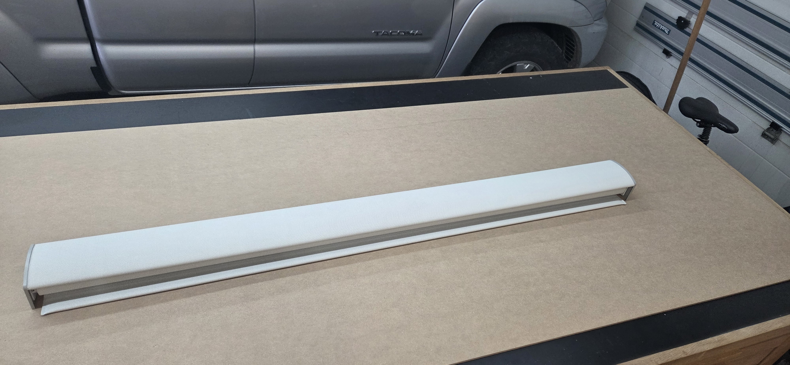

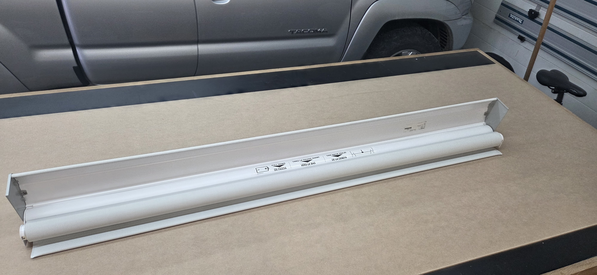

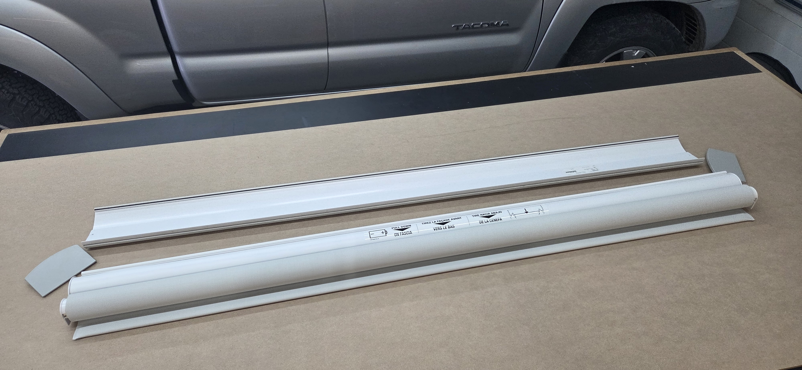

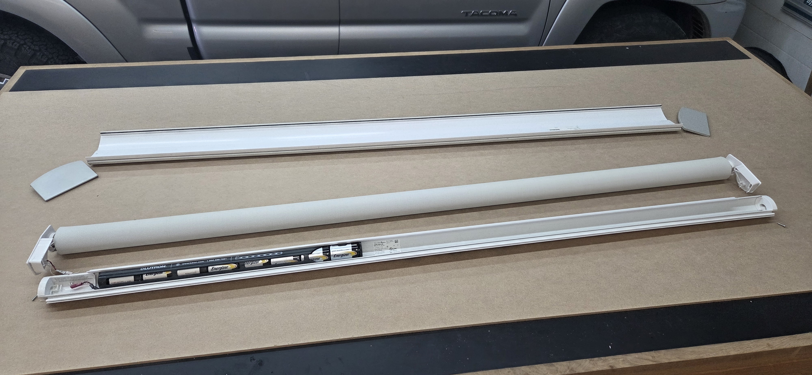

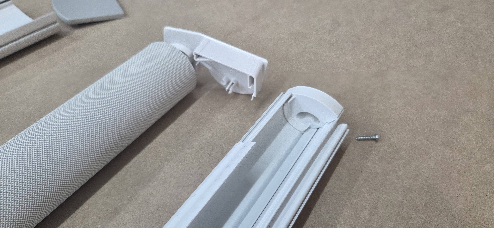

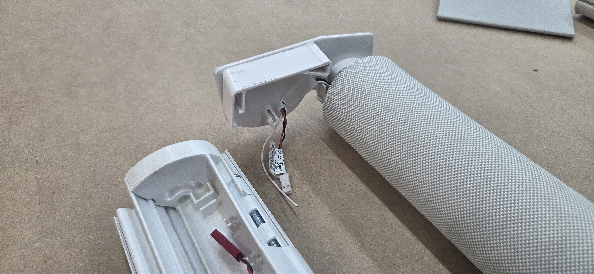

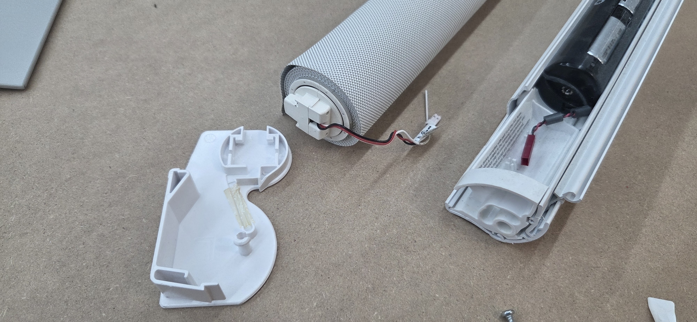

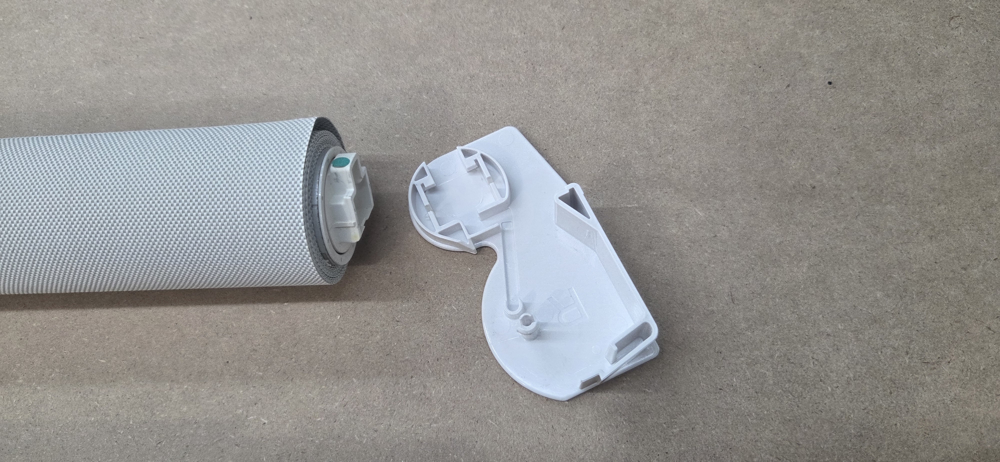
Stripping back the battery rail
The battery holder comes out of the larger housing, and the channel is shortened.

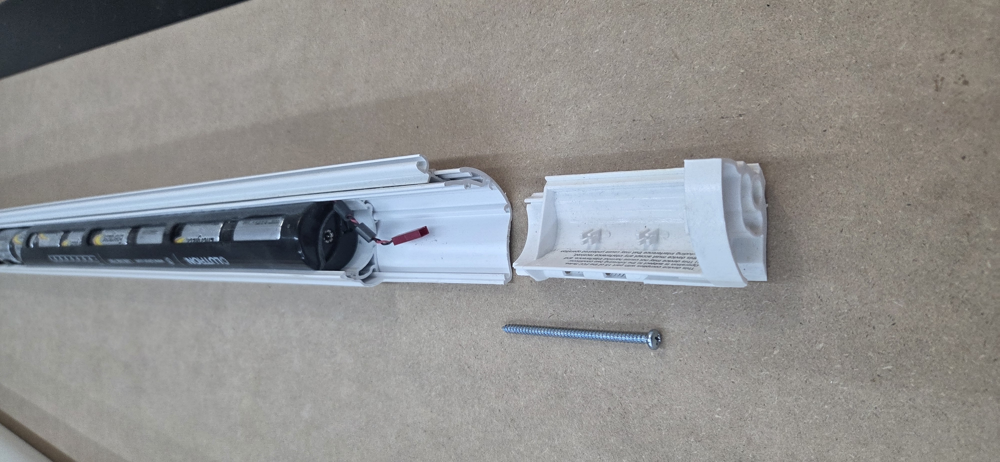

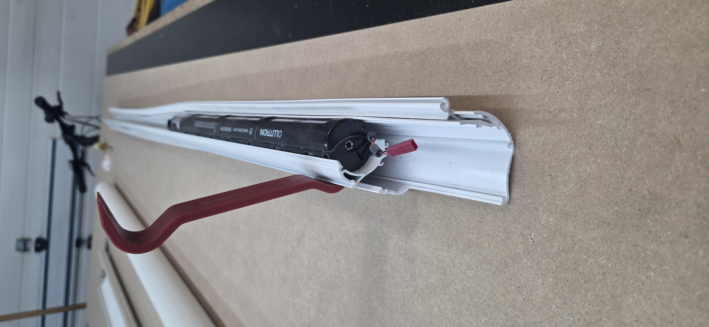

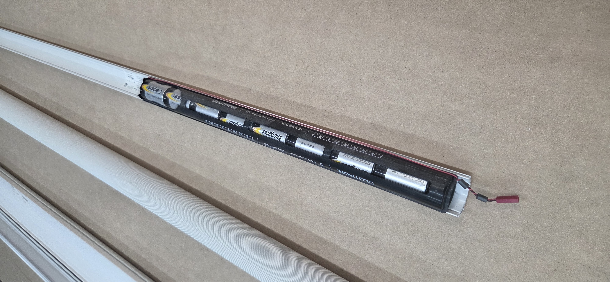

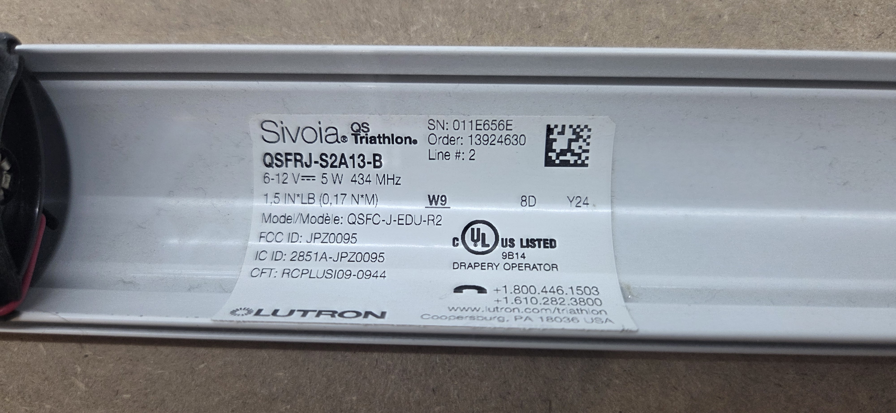

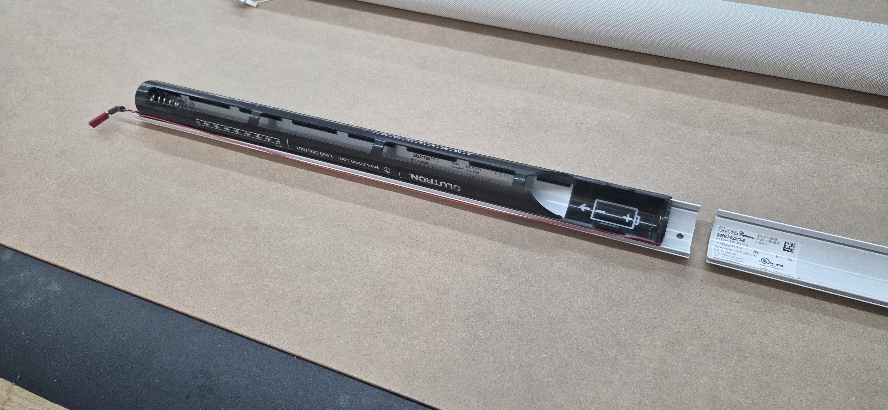
Down to the roller and fabric
Separating the fabric, bottom bar, and internal assemblies.

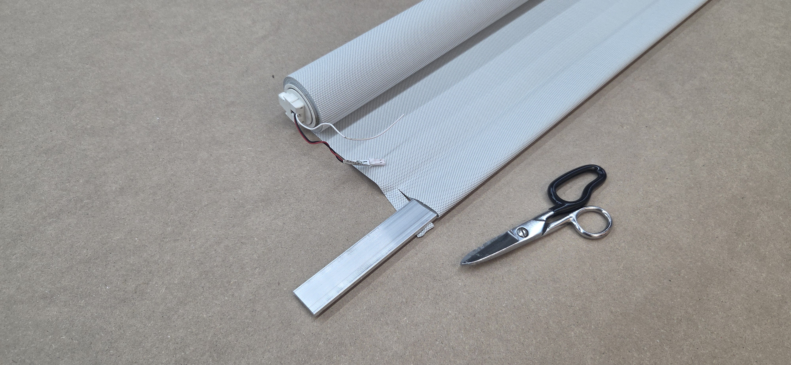

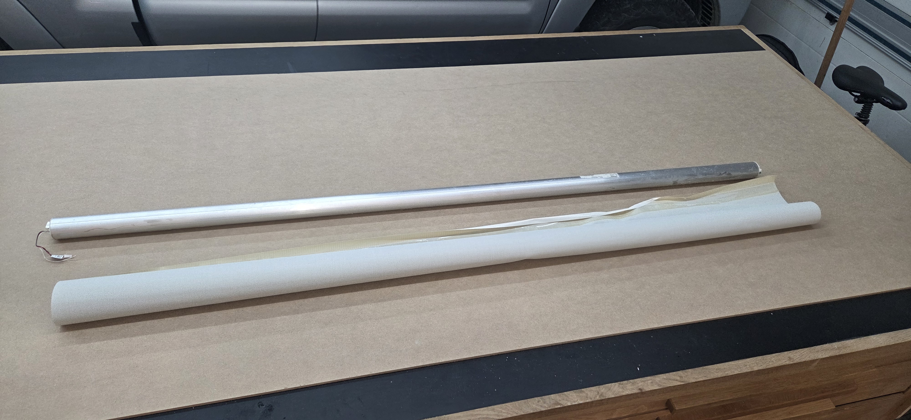

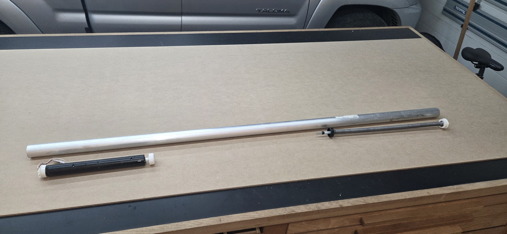
Rebuilding around the roller
New mounts, a bare-roller test fit, and the motor and battery assembly.

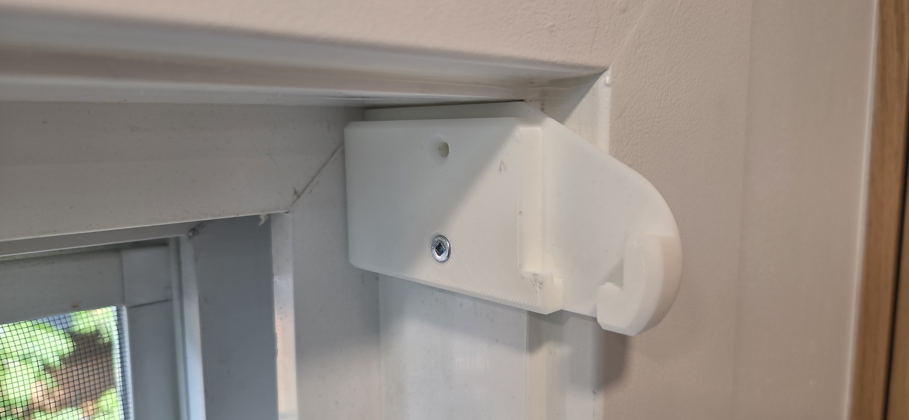

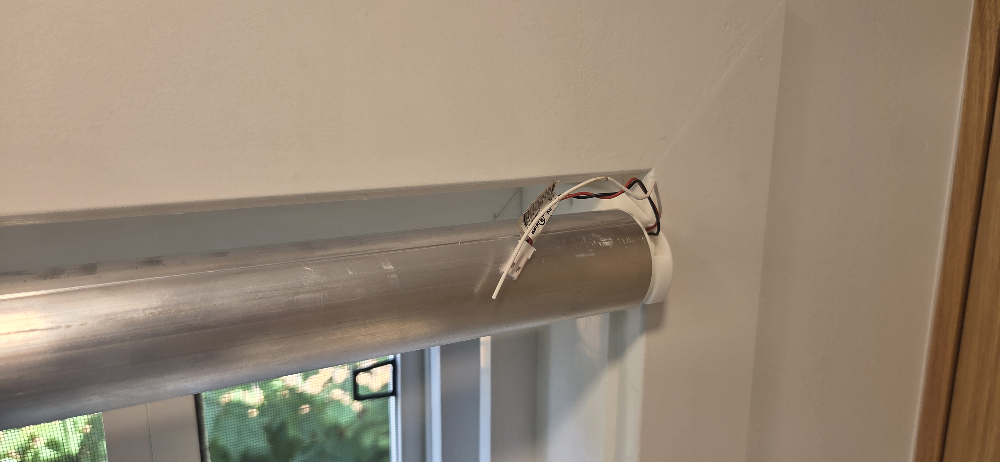

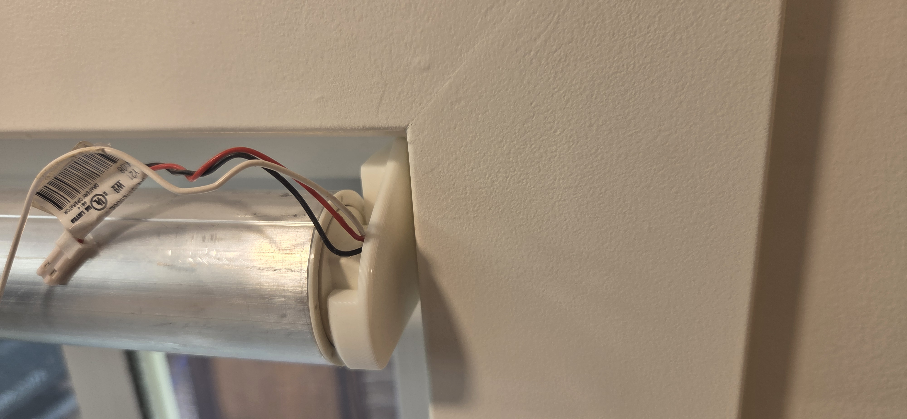

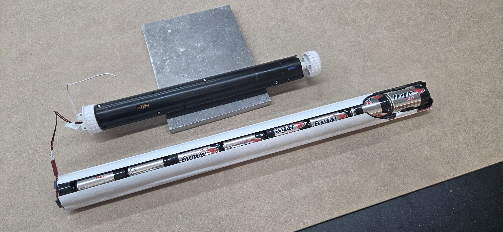
Working on the fabric
The fabric and bottom bar laid out on the bench for the rebuild.

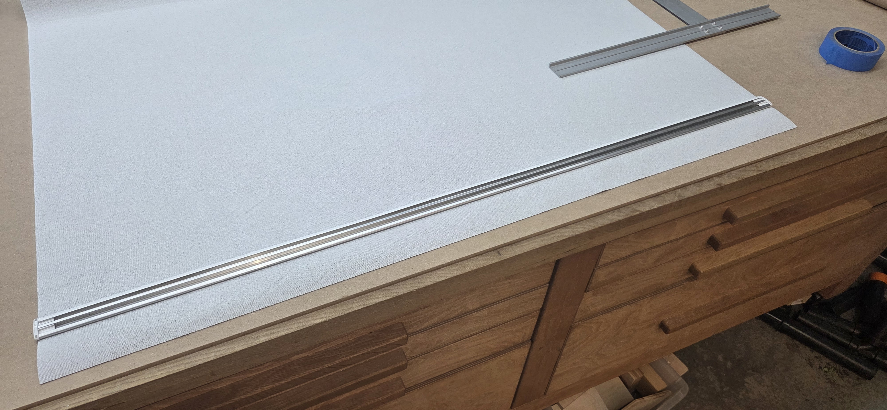
Explore another project / 03Air Quality Monitor